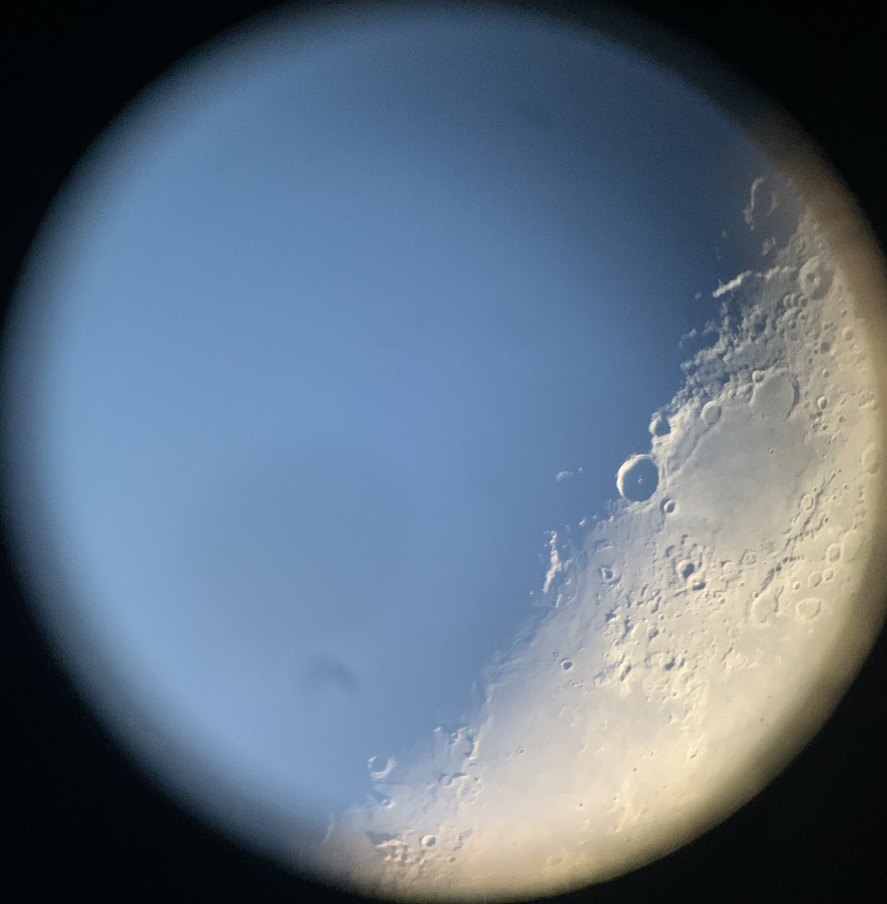

My name is Rebecca, I'm a first year master's student in Physics and Astronomy at McGill University. I'm also a member of the Trottier Space Institute (TSI). Working under the supervision of Dr. Daryl Haggard (McGill) and Dr. John Ruan (Bishop’s), I study transients - short-lived cosmic events. I'm interested in gravitational wave (GW) sources, notably neutron star-neutron star (NS-NS) and black hole-neutron star (BH-NS) merger events, also known as kilonovae.
In the last decade, gravitational wave astronomy has opened a new window into cosmic events that shape the universe. One of the most exciting discoveries has been detecting gravitational waves from neutron star mergers. These extreme collisions release energy through both gravitational waves and electromagnetic radiation and create heavy elements like gold and platinum through the rapid neutron-capture process (r-process). Kilonovae, the electromagnetic (EM) counterparts generated by these events, reveal crucial information about the formation of heavy elements. By studying their light signatures across the UV, optical, and infrared spectra, we can uncover the mysteries of element creation in the universe.
My research focuses on analyzing the kilonova from the first detected neutron star merger, GW170817, using the Spectral r-Process Abundance Retrieval for Kilonovae (SPARK) - a machine learning tool which allows us to measure chemical abundances in the spectrum of kilonovae. Recent advances in the study of heavy isotope spectral lines offer an exciting opportunity to identify more elements in the spectrum of GW170817.
This study aims to deliver the most precise elemental analysis yet, revealing new details about how neutron star mergers contribute to the cosmic abundance of heavy elements and probing the underlying atomic processes that power these fascinating events!
Outreach
I am also very passionate about science communication and outreach! My outreach journey began in 2021 when I worked as an astronomy presenter at the Parc National du Mont Mégantic ASTROLab. Combining my love for the outdoors with my enthusiasm for space, I led observatory tours that introduced visitors to the night sky. Watching the awe in people’s faces, especially the youngest stargazers, sparked a deep appreciation for inspiring others.
In 2022, I took on a new role with the Canadian Space Agency’s proposed Cosmological Advanced Survey Telescope for Optical and ultraviolet Research (CASTOR) mission. I managed the science communication for CASTOR, producing a series of video interviews that highlighted team members across different fields.
I was also the recipient of the 2023 Trottier Institute for Research on Exoplanets (IREx) Sureau Science Communication Grant and had the chance to work closely with Dr. Nathalie Nguyen-Quoc Ouellette. These experiences have solidified my dedication to bridging complex science with public understanding, showing me the value of communication in making astronomy accessible.
EDIA
In addition, I am also passionate about advancing equity, diversity, inclusion, and accessibility (EDIA) in STEM. Over the span of 11 months, I contributed to Parité Sciences, a Quebec-based initiative aimed at reducing gender disparities in STEM fields. My role included survey analysis and outreach to extend Parité’s mission beyond Quebec. This experience inspired me to launch an EDIA initiative within my department at Saint Mary’s University, which remains active today.



My Hobbies
In my personal time, I enjoy many hobbies, mainly cooking, reading, and taking care of my plants! If you're interested in peering into my non-academic life, click below: